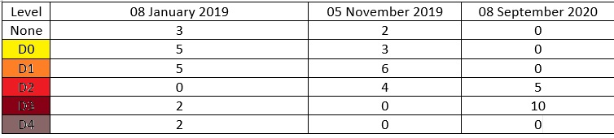

if (!require(pacman)) install.packages(pacman)pacman::p_load(geojsonio,jqr, tidyverse, formattable, dlookr, readxl, writexl)library(shiny)library(ggplot2)library(thematic)library(ragg)library(readr)library(stringr)library(shinydashboard)library(readxl)library(tidyr)library(sf)library(dplyr)drought_df <-read_excel("Shiny App/data/drought_data.xlsx", sheet ="Total Area by County")percent_drought_df <-read_excel("Shiny App/data/drought_data.xlsx", sheet ="Percent Area by County")# Load GeoJSON data for Arizona countiesarizona_counties <-st_read("Shiny App/data/arizona-with-county-boundaries_1085.geojson")
Reading layer `arizona-with-county-boundaries_1085' from data source
`C:\Users\sweth\OneDrive\Desktop\project-final-Graph-Gurus\Shiny App\data\arizona-with-county-boundaries_1085.geojson'
using driver `GeoJSON'
Simple feature collection with 15 features and 5 fields
Geometry type: POLYGON
Dimension: XY
Bounding box: xmin: -114.815 ymin: 31.329 xmax: -109.045 ymax: 37.005
Geodetic CRS: WGS 84
Abstract
This project aims to explore and interpret the data on Arizona’s enduring drought conditions, a climatic challenge that disrupts the balance of life and has adverse effects on the state’s future. The investigation is driven by a combination of curiosity and the recognition of water scarcity as an issue that is deeply connected to Arizona’s residents. By exploring this database, we seek to gain valuable insights into the dynamic nature of Arizona’s drought experiences.
We aim to create easy-to-understand visuals that depict the current situation and stimulate thinking about potential solutions. A close examination of how different areas are dealing with water shortages will help us determine where to focus our efforts to contribute to the mitigation of this issue. Through this project, we hope to shed light on the severity of the drought and inspire action towards sustainable water management practices in Arizona.
Introduction
Arizona is known for its dry weather, and for over 20 years, it’s been dealing with a serious drought. This isn’t just about the weather - it affects everything from nature to people’s jobs and the state’s economy. This drought reminds us of similar events in the 1900s and 1950s, and it’s clear that we need to take a closer look at what’s happening.
Our recent interactions with individuals actively raising awareness about the dire drought situation and the adverse effects of water wastage have further inspired this exploration. The project’s objective is not only to provide valuable data for our visualization but also to offer a profound understanding of the challenges faced by the state.
Motivation
We’re not just interested in this from a scientific point of view. People living in Arizona are genuinely worried about the lack of water, and we’ve been inspired by those who are passionate about saving water. We want to dig deeper into this important issue. Our goal isn’t just to analyze data; we want to understand the big challenges Arizona is facing and share this information with others.
Motive
Our main goal with this project is to raise awareness and encourage action. We’re not just making a data visualization; we want to change how people think, start conversations, and help everyone understand how serious Arizona’s drought is. By creating an interactive dashboard about the drought, we hope to help users interact with the data, understand the trends, and think about possible solutions. In the end, we want to encourage everyone, from ordinary people to policymakers, to take steps towards managing water resources in a sustainable way.
Analysis
Question 1: How has the severity of drought changed over time in Arizona?
The variability of drought over time is a critical aspect of climate patterns, especially for arid regions like Arizona. This variability can have profound effects on water allocation, agricultural planning, and natural ecosystems. While historical trends have been studied, the nuanced changes within these trends, and the frequency and intensity of extreme drought conditions, remain areas requiring deeper exploration. In recent years, technological advances and data collection efforts have provided an unprecedented amount of climatic data, offering new opportunities to analyze drought patterns with greater precision. This wealth of data paves the way for more detailed temporal analysis, allowing for a better understanding of the cyclical nature and potential shifts in drought severity.
Approach:
To answer how drought severity has shifted over time in Arizona, we initiated a time series analysis focusing on yearly data aggregated across the state’s counties. We meticulously preprocessed the drought data, first by extracting the year from each record, then by computing yearly averages for each drought level, including the ‘None’ category. To ensure comparability across years and counties, we normalized these figures into percentages, painting a clearer picture of annual drought severity changes. With this foundation, we crafted a color-coded stacked bar chart, each hue representing a different drought level, providing an immediate visual understanding of how these levels stack up year over year. Concurrently, we developed a time series plot that layers these annual percentages, offering a dynamic portrayal of drought trends over the decades and inviting an interactive exploration of the data for more nuanced insights.
Analysis for Q1
# Preprocess the data to obtain Yeardrought_df <- drought_df %>%mutate(Year =format(as.Date(Date), "%Y"))# Calculate the yearly average for each drought level including 'None'yearly_data <- drought_df %>%group_by(Year, County) %>%summarise(across(c(None:D4), mean, na.rm =TRUE)) %>%pivot_longer(cols =c(None:D4), names_to ="Drought_Level", values_to ="Value")# Normalize the values to percentagesyearly_data <- yearly_data %>%group_by(Year, County) %>%mutate(Percentage = Value /sum(Value) *100) %>%ungroup()
drought_colors <-c("None"="#FFFFFF", # Assuming 'None' is white"D0"="#FFFF00", # Yellow"D1"="#FFA500", # Orange"D2"="#FF0000", # Red"D3"="#8B0000", # Dark Red"D4"="#654321"# Brown)
BARPLOT
#Plotggplot(yearly_data, aes(x = Year, y = Percentage, fill = Drought_Level)) +geom_bar(stat ="identity", position ="fill") +scale_fill_manual(values = drought_colors) +scale_y_continuous(labels = scales::percent_format()) +labs(title ="Average Yearly Drought Levels", x ="Year", y ="Percentage", fill ="Drought Level") +theme_minimal() +theme(axis.text.x =element_text(angle =90, vjust =0.5))
TIMESERIES PLOT
#We are passing input as county and time series for that county will reflect on the dashboard. The code below is just the outline of what we did.
# Filter county datacounty_data <- drought_df %>%group_by(Year, County) %>%summarise(across(c(None:D4), mean, na.rm =TRUE)) %>%pivot_longer(cols =c(None:D4), names_to ="Drought_Level", values_to ="Value") %>%mutate(Percentage = Value /sum(Value) *100) %>%ungroup() county_data$Year <-as.Date(paste0(county_data$Year, "-01-01"))#Plotggplot(county_data, aes(x = Year, y = Percentage, fill = Drought_Level)) +geom_area(alpha =0.7, stat ="identity") +scale_fill_manual(values = drought_colors) +scale_y_continuous(labels =function(x) paste0(x, "%")) +labs(x ="Year", y ="Percentage", title =paste("Drought Level over the years")) +theme_minimal() +theme(legend.position ="right",plot.title =element_text(hjust =0.6, size =12),legend.text =element_text(size =8),legend.title =element_text(size =10)) +guides(fill =guide_legend(title.position ="top", title.hjust =0.5))
Question 2: What are the most affected areas in Arizona in terms of drought severity?
While our initial analysis highlighted the temporal dynamics of drought in Arizona, we realized that understanding the spatial distribution of drought severity across different counties was equally crucial. This line of inquiry is particularly important because drought impacts vary significantly across regions due to diverse geographical and climatic conditions. For example, some counties might consistently experience higher levels of severe drought categories (such as D3 or D4), indicating a greater vulnerability to drought effects.
Analysis
Our approach to this question involves a detailed analysis using a donut plot integrated with a Leaflet map. We start by processing our drought data to calculate the proportion of each drought severity level within individual counties. This involves summarizing the area affected by each drought level for a selected county and then transforming these values into percentages. The resultant donut plot provides a clear visual representation of the drought severity distribution within the selected county.
When a user interacts with the Leaflet map and selects a county, the donut plot dynamically updates to display the percentage breakdown of drought levels for that particular area. This interactive feature is crucial for understanding the specific drought conditions in different parts of Arizona, allowing us to identify which counties are most severely affected.
ggplot(drought_totals, aes(x =2, y = Percentage, fill = Drought_Level)) +geom_bar(stat ="identity", width =1) +coord_polar(theta ="y") +theme_void() +scale_fill_manual(values = drought_colors) +geom_text(aes(label =sprintf("%0.2f%%", Percentage)), position =position_stack(vjust =0.5)) +xlim(c(0.15, 2.5))
This spatial analysis is not only critical for current drought management strategies but also sets the foundation for our next line of inquiry. Understanding the distribution of drought severity levels in different counties leads us naturally to Question 3, where we explore whether there’s a correlation between drought severity and specific times of the year.
Question 3: Is there a correlation between drought severity and certain times of the year?
Building on our understanding of drought severity distribution across Arizona’s counties, we aim to further examine if these drought conditions correlate with particular times of the year. This investigation is crucial for identifying seasonal patterns in drought severity, which can inform more effective drought management and preparedness strategies.
Approach:
In addressing Question 3, our focus shifted to understanding if drought severity in Arizona correlates with specific times of the year, a crucial aspect for planning and mitigating drought impacts effectively. To analyse, we utilized a choropleth map, a powerful tool for visualizing geographical data, which shows drought severity levels across different counties on selected dates. We began with preprocessing of the geospatial drought data and then we streamlined the dataset by renaming and selecting essential columns, ensuring data types were consistent for accurate mapping. We then merged this data with detailed geographic information of Arizona counties, assigning weights to each drought level to compute a ‘Drought Score.’ This score was normalized to provide a consistent scale for comparison across counties. By incorporating user-selected dates, our choropleth map dynamically reflects the drought severity for any given day, visually represented through color gradients corresponding to different drought levels. This interactive and detailed visualization allows us to investigate if certain times of the year are consistently more prone to severe drought conditions, thereby addressing the question of seasonal correlation with drought severity in Arizona.
Analysis for Q3
#Rename Column from name to County arizona_counties_new <- dplyr::rename(arizona_counties, County = name)#Drop all columns ecept County and geometry arizona_counties_new <- arizona_counties_new %>%select(County, geometry)#Convert to req data types percent_drought_df$County <-as.character(percent_drought_df$County) arizona_counties_new$County <-as.character(arizona_counties_new$County) percent_drought_df$Date<-as.Date(percent_drought_df$Date) drought_data_geospatial <- percent_drought_df %>%left_join(arizona_counties_new, by ="County")# Assign weights to the drought levels drought_weights <-c(None =0, D0 =1, D1 =2, D2 =3, D3 =4, D4 =5)# Calculate 'Drought Score' by multiplying the area percentages by the weights drought_data_geospatial <- drought_data_geospatial %>%mutate(Drought_Score = (None * drought_weights[["None"]]) + (D0 * drought_weights[["D0"]]) + (D1 * drought_weights[["D1"]]) + (D2 * drought_weights[["D2"]]) + (D3 * drought_weights[["D3"]]) + (D4 * drought_weights[["D4"]]))# Normalize 'Drought Score' # Assuming that the maximum possible score is 5 (for D4 at 100% coverage) drought_data_geospatial <- drought_data_geospatial %>%mutate(Normalized_Score = Drought_Score /max(Drought_Score))#Make sure your date column is type date drought_data_geospatial$Date <-as.Date(drought_data_geospatial$Date)
CHLOROPLETH MAP
#Pick a date of intreset for our report, passing as an input to shinydates_of_interest <-as.Date(c("2005-04-26 UTC"))#Filter with datedrought_data_filtered <- drought_data_geospatial %>%filter(Date %in% dates_of_interest)# Plot the map with ggplot2 and sfggplot(data = drought_data_filtered) +geom_sf(data = drought_data_filtered$geometry,aes(fill = drought_data_filtered$Normalized_Score), color ="black", size =0.2) +scale_fill_gradientn(colors = drought_colors,name ="Drought Level",breaks =c(0, 1, 2, 3, 4, 5), labels =c("None", "D0", "D1", "D2", "D3", "D4"), # Specifying the labels for the breakslimits =c(0, 5), oob = scales::oob_squish ) +labs(title =paste("Drought Levels in Arizona on 2005-04-26")) +theme_minimal() +theme(legend.position ="right",axis.text.x =element_blank(),axis.text.y =element_blank(),axis.title.x =element_blank(),axis.title.y =element_blank(),axis.ticks =element_blank() )
Interpretation
Short Term Drought Conditions:

Long Term Drought Conditions:
Conclusion
Our deep dive into Arizona’s drought conditions has given us a clear picture of a state struggling with long-term water shortages. Our interactive dashboard, which uses data visualization, has helped us understand this complex environmental issue. By analyzing data from the past twenty years, we’ve been able to track how drought severity has changed across different parts of Arizona, highlighting the problems faced by people, nature, and businesses.
Our detailed visualizations and statistical analyses have shown us just how serious the situation is. From slightly dry conditions to extreme drought, each stage has a growing impact on farming, water supplies, and the state’s overall health. The changing severity of the drought has not only put Arizona’s natural environment to the test but also called for immediate policy changes and community-led actions.
Our goal to involve, inform, and inspire action aligns with the need for teamwork. The data doesn’t just tell a story of hardship; it acts as a trigger for change. As we conclude this report, the need for sustainable management of water resources is clear. The responsibility falls not just on policymakers but on every citizen to adopt water-saving habits, encourage innovation, and support policies that protect Arizona’s water supply for the future.
In short, this project is more than just about drought data; it’s about our shared duty to protect Arizona’s vital water resources. The process of exploring and visualizing the data has highlighted the need for a coordinated approach. It’s a call to action, an invitation to turn knowledge into meaningful actions. We hope this report will act as a guide, leading us towards a future where Arizona is more resilient and mindful of water usage.